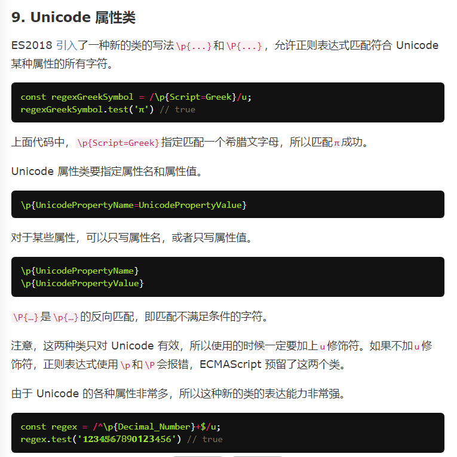

1.允许 RegExp构造函数重新为正则表达式指定修饰符
2.字符串正则方法内部改为调用 RegExp对象原型上的方法
3.u修饰符，正确匹配4字节utf-16；iu能匹配相同字型
4.y修饰符（粘连 sticky修饰符）和 sticky属性
5.flags属性返回修饰符
6.S修饰符（ES2018）
在之前的正则中，点符号 .不能正确匹配终止符：
- U+000A 换行符（\n）
- U+000D 回车符（\r）
- U+2028 行分隔符（line separator）
- U+2029 段分隔符（paragraph separator）
解决方法：[^]匹配任意字符或使用s修饰符使点符号能匹配任意字符
s修饰符与m（多行）修饰符不冲突
7.支持后行断言
7.支持后行断言
8.ES2018 引入后行断言
9.
10.ES2018引入具名组匹配，并支持到解构赋值

支持引用组名
10.提案： matchAll方法，返回遍历器